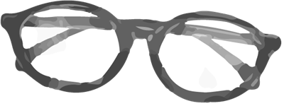
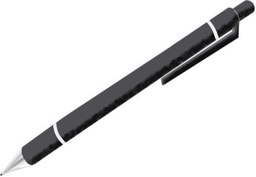

※このページの日程・内容はすべてサンプルです。実際の情報は入学試験要項をご確認ください。

EXAM TYPES
入試方式
-
{{ e.no }}
{{ e.name }}
{{ e.text }}
- 選考方法
- {{ e.method }}
- こんな人に
- {{ e.fit }}
SCHEDULE
入試スケジュール
| 入試方式 | 出願期間 | 試験日 | 合格発表 |
|---|---|---|---|
| {{ e.name }} | 20XX年X月X日〜X月X日 | 20XX年X月X日 | 20XX年X月X日 |

STEPS
出願までの流れ
-
{{ s.no }}
{{ s.title }}
{{ s.text }}
TUITION
学費・奨学金
学費の詳細と、本学独自の給付型・貸与型奨学金、入試成績による特待生制度については、入学試験要項に掲載しています。
FAQ
よくある質問
Q. {{ q.q }}
A. {{ q.a }}
資料請求・出願
大学案内パンフレットと入学試験要項は無料でお届けします。
出願はインターネット出願サイトから行えます。